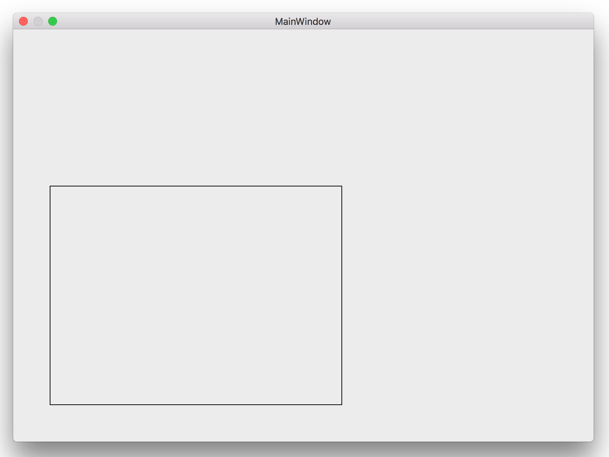
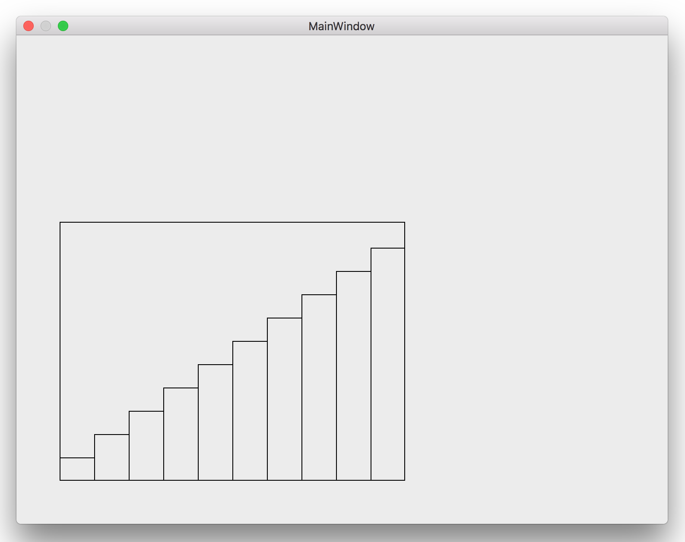

ビューのフレームを拡大・縮小・移動する

画像をクリックすると動画になります。
ビューの矩形の四隅の点をドラッグすれば矩形が縦横方向に拡大・縮小する。四辺の線をドラッグすれば縦または横方向に拡大・縮小する。それ以外の矩形の領域のどこかをドラッグすれば矩形はそれに合わせて移動する。
ビューのフレーム
原点の座標（NSPoint）と原点からの幅と高さ（NSSize）で表される。幅や高さはマイナス値を持つこともできる。
利用方法
拡大・縮小・移動を行うビューのオブジェクトを作成し親ビューに貼り付ける。マウスのドラッグ操作に応じた各イベントプロシージャから対応するメソッド（select、scale）を呼ぶ。
実装の要点
ビューの拡大・縮小・移動は、マウスのドラッグに合わせて、ビューのフレームの値を変化させることによって実現する。
点・線をマウスのクリックで選択するとき、クリックした点に隣接するある範囲の点までを選択領域とする。そうしないと、点・線の選択をピンポイントで行う必要があり、操作性に欠ける。
ソースコード
フレームの拡大・縮小に合わせて中のビューも拡大・縮小する

画像をクリックすると動画になります。
前掲で示したビューの中に、棒グラフもどきを表示している。棒グラフのそれぞれの要素は NSViewオブジェクトとして作成し、外側のビューに貼り付けている。UAScaledViewクラスのサブクラスとして実装することにより、ビューの拡大・縮小・移動の機能を継承している。
ビューの変化は NSViewクラスの通知 frameDidChangeNotification により受け取ることができる。外側のビューをマウスのドラッグで拡大・縮小・移動した時点で通知が発生するので、それに合わせて内側のビューの大きさ・位置を変化させる。
しかしながら、この通知はサブビューを含めた全てのビューの変化を拾いあげるため、内側の棒グラフの大きさを変えるプログラムの動き対しても反応してしまい、同じ処理が無駄に繰り返されることになる。見た目に影響するような深刻な負荷が生じることはなさそうだが、ちょっと面白くない。